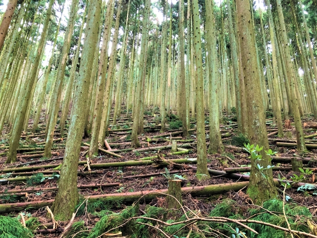
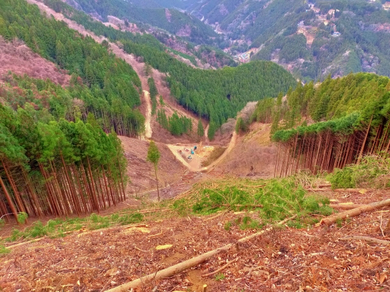

100年後の子どもたちに、この景色を残したい
林業の仕事は、木を切ることだけではありません。
適切に手を入れ、光を届け、新しい命を育む。
私たちが進める「持続可能な森づくり」についてご紹介します。
木が密集しすぎると、地面まで光が届かず、他の植物や動物たちが住めない暗い森になってしまいます。 私たちは「間伐（かんばつ）」を行い、森に呼吸をさせるスペースを作っています。

手入れされた森の土壌は、雨水をしっかりと蓄える「緑のダム」となります。 これにより、土砂崩れを防ぎ、川の水をきれいに保つことができます。

私たちは地域の皆様や支援者の皆様に対し、定期的に活動の成果を報告しています。 森林がどれだけCO2を吸収したか、どのような動植物が戻ってきたかを数値化しています。
森林保全活動と地域貢献のまとめ